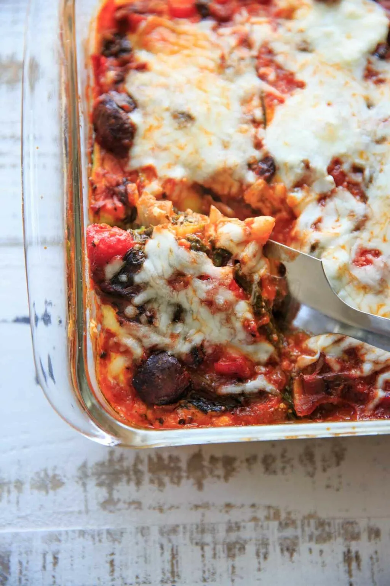

Zoodle Lasagne

Description
I'm a pasta lover to the core, but never tried veggie filled pasta! I wanted to try something different and
came across zucchini noodles, also known as "Zoodles". Zoodles are a delicious healthy gluten-free pasta
alternative made from zucchini! The best part of zoodles, they are good for you and actually taste really
good.You can never go wrong with a good ol' lasagna.
This Zucchini Noodle Lasagna is easy to make. It is made with fresh zucchini noodles instead of pasta. Not only
is this version gluten free, keto friendly, and packed with vegetables, it stills includes that cheesy lasagna
flavor. Just a bit lighter and healthier. (A definite win).
Ingredients
- 4 zucchini
- 1 ½ cups homemade or store-bought tomato sauce
- ⅔ cup shredded mozzarella cheese
- 1 ½ cups bechamel sauce
- 1 cup grated Parmigiano Reggiano cheese
- ¼ cup fresh basil, chopped
Steps
Preheat oven to 375 degrees F (190 degrees C)
Cut zucchini lengthwise into 1/4-inch thick slices with a knife or mandolin.
Pour 2 tablespoons tomato sauce on the bottom of a 9x13-inch baking dish. Arrange zucchini slices in a single
layer, slightly overlapping, over tomato sauce.
Top with a thin layer of mozzarella, 1/3 of the bechamel (see Editor's Note), 1/3 of remaining tomato sauce, 1/3
of the Parmigiano Reggiano cheese, and 1/3 of the basil. Repeat layers, topping with bechamel and Parmigiano
Reggiano cheese.
Bake in the preheated oven until sauce is bubbly and the top is golden brown, about 35 minutes. Allow to set
until remaining liquid is absorbed, about 10 minutes.